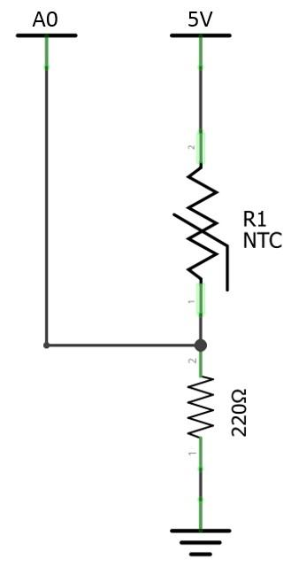
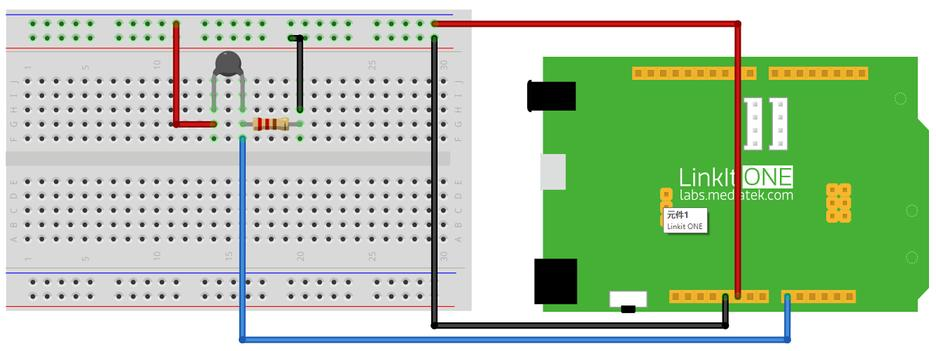

What We're Doing
LinkIt One with Wi-Fi communication function. We have collected some data through the LinkIt One. As the Internet AP to support data access by providing Web Server. Access to the corresponding IP address can get the data with browser. Next step you need to connect circuit, data acquisition from temperature sensor. Then well equipped with Wi-Fi antennas you and connected to the network, please have a choise with the network fill in the three parameters, the network name (WiFi_AP), access password (WIFI_PASSWORD), and transmission mode of router (options LWIFI_OPEN, LWIFI_WPA, LWIFI_WEP). Finally, the code is uploaded to the LinkIt One. Use of terminal device with network, open the browser and enter the IP address will obtain the temperature data. (Visit the IP address assignment via DHCP router access)
Things you need
Schematic

Connection

Code
Please click on the button below to download the code for the kit:

You can unzip the file to the Examples folder of your Arduino IDE.
To access the demo code open:
File -> Examples -> Starter Kit for LinkIt -> Basic -> L10_Web_Temp
Note that you should open the Serial monitor to input anything to start the program.
Troubleshooting
Making it better
Do you want to change the data in real time? We through the Web port to monitor a variation of light sensitivity value.
To access the demo code open:
File -> Examples -> Starter Kit for LinkIt -> Extend_Lesson –> L10_Web_Temp_Advanced
More ideas
If want to control the LinkIt One with web. How control the work of hardware can be?
Reference